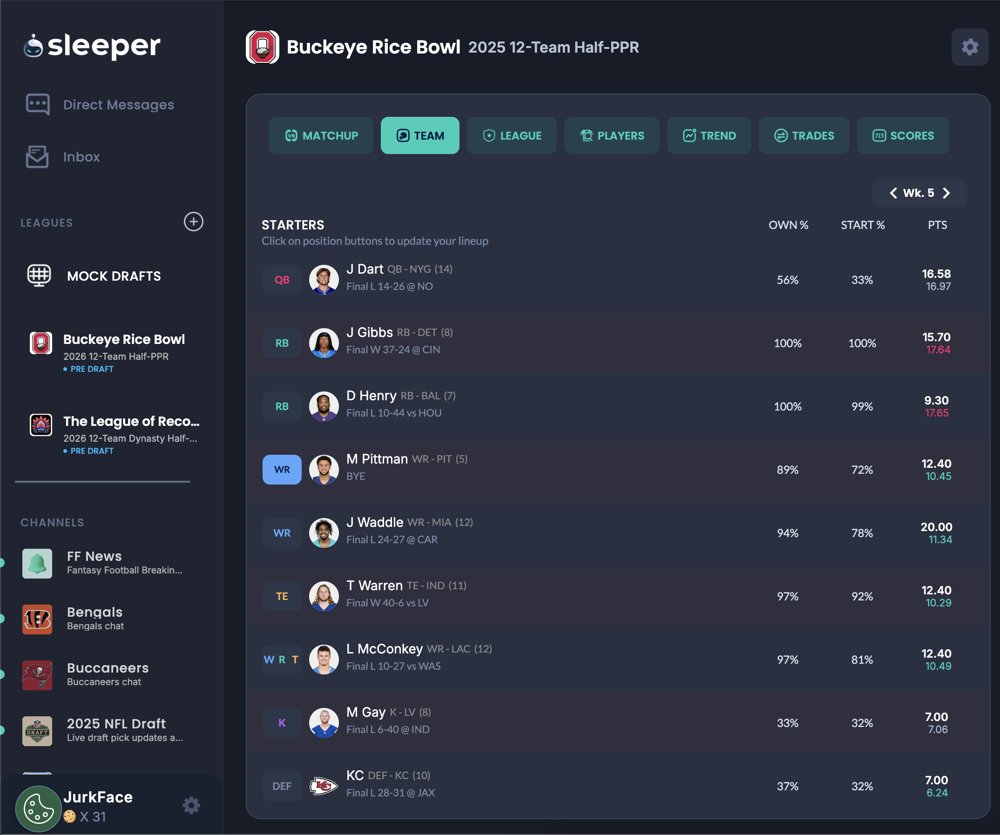

The Buckeye Rice Bowl

Project Overview
The Buckeye Rice Bowl is an 12-person fantasy football league rooted in Columbus, Ohio. What started as a casual competition among close friends has become the primary thread connecting a group of people spread across different cities and life stages. I joined the league a decade ago and took over as commissioner five years ago with a clear goal: transform a passive game into an active, year-round community.
This case study documents the design decisions, systems, and rituals I built to increase engagement, reduce churn, and make every league mate feel like an invested stakeholder — not just a passive player.
The Problem
Fantasy football leagues have a natural engagement cliff. The draft creates a spike of excitement, but interest drops steeply after Week 4. Managers who fall behind in the standings disengage entirely. Group chats go quiet. The league stops feeling like a shared experience and starts feeling like a chore.
The Buckeye Rice Bowl had a deeper problem layered on top of this: it was the main way I — and several members — stayed connected with friends back home. Losing engagement in the league meant losing a genuine social thread.
Pain Points Identified
- Engagement dropped sharply mid-season for managers outside playoff contention
- No consistent communication channel beyond the Sleeper app’s limited native tools
- No accountability mechanisms for dues, trades, or league decisions
- Zero off-season touchpoints — the league “died” from January through August
- No recognition for great play, only punishment for last place
Research & Discovery
Before building systems, I needed to understand what the league actually wanted. I ran informal surveys and group discussions to surface unspoken frustrations and desires.
Research Methods
- Annual pre-season survey sent to all 11 managers
- End-of-season retrospective questions via group chat
- Direct 1:1 conversations with disengaged managers to understand drop-off reasons
- Observation of Sleeper app activity — tracking who viewed, reacted, and posted
Key Findings
- Managers wanted more ways to win beyond the championship trophy
- The group valued the social ritual as much as the competition itself
- Financial stakes (even small ones) dramatically increased attention and accountability
- Members craved recognition — feeling “seen” within the group increased investment
- Off-season silence was the single biggest reason people considered leaving
Design Solutions
Each initiative below was designed to solve a specific engagement problem. They compound: the newsletter drives conversation, the constitution creates trust, the awards ceremony creates anticipation, and the annual meeting creates accountability.
01 — The Weekly Newsletter
The single highest-impact change I made. Every week during the season I wrote and distributed a newsletter covering matchup previews, power rankings, manager spotlights, and league drama. It transformed passive consumption into active discussion.
- Design Goals: Give every manager a reason to check in, regardless of their record. Create shared narrative and inside language that builds group identity. Surface individual storylines so managers felt personally recognized.
- Outcomes: Reply rates and group chat activity increased measurably each week the newsletter went out. Managers in losing positions remained engaged because the newsletter featured everyone, not just contenders.
02 — League Constitution & Bylaws
Ambiguity kills communities. I wrote a formal constitution covering trade deadlines, dispute resolution, payout schedules, promotion/relegation rules, and voting procedures. It formalized trust.
- Design Goals: Reduce commissioner arbitration burden by creating a shared source of truth. Give members ownership — they voted on amendments, making the document theirs. Signal that this league was serious and worth investing in.
04 — Weekly Bonus Mechanics
I designed weekly bonus competitions — highest scoring bench, best waiver pickup, closest matchup — to give every manager something to compete for beyond the weekly win/loss. These created additional moments of celebration and rivalry.
- Design Goals: Reduce disengagement from managers out of playoff contention. Create micro-narratives within the season that the newsletter could amplify. Diversify the ways to “win,” broadening the competitive surface area.
05 — Strict Money Management System
I implemented a transparent dues collection and payout system with documented deadlines, escrow practices, and publicly shared financial ledgers. When money is involved, trust and clarity are non-negotiable.
- Design Goals: Eliminate disputes and late payments with a documented process. Build credibility as a commissioner through radical financial transparency. Increase stakes in a way that felt fair to all income levels.
06 — Annual League Meeting
Once a year, I organized a league meeting — in-person when possible, video call otherwise — to recap the season, vote on rule changes, and set expectations for the next year. It turned a passive digital experience into a lived event.
- Design Goals: Create an off-season anchor that maintained social momentum. Give members a structured venue for grievances and ideas. Reinforce that this league was a real community, not just an app.
07 — End-of-Season Awards Ceremony
I designed a full awards program recognizing every manager for at least one achievement each season. Categories ranged from “Best Draft” and “Most Improved” to comedic honors like “Best Excuse for a Bad Week.” Everyone won something.
- Design Goals: Close the season with a moment of celebration rather than a quiet ending. Ensure no manager left feeling invisible or unrecognized. Create shareable, memorable moments that people looked forward to returning for.
08 — The Hardest Vote: Removing a Member
Not every design decision is a feature. Some are policies. One of the most consequential decisions I made as commissioner was initiating a vote to remove a member from the league — a situation the constitution was specifically written to handle fairly.
Over time, one member’s behavior was consistently detracting from the experience — disengagement, lack of accountability, and friction that dampened the group’s energy. As commissioner, I recognized that protecting the league’s culture required action, even when that action was uncomfortable.
The constitution required a unanimous vote from all remaining members to remove anyone from the league. That threshold was intentional — it ensured removal could never be political or arbitrary. Out of 11 remaining members, all 11 voted in favor. The decision carried, and a replacement member was brought in to restore the league to its full 12-person roster.
The Process
- Issue formally raised under the constitution’s removal clause
- Private discussion held with all 11 remaining members before any vote was called
- Unanimous vote conducted — 11 of 11 members in favor of removal
- New member identified, vetted by the group, and onboarded to restore the 12-person roster
Why It Mattered as a Design Decision
- The constitution made a painful decision feel legitimate and fair — the process protected everyone, including the person being removed
- The unanimous threshold prevented any perception of bias or a commissioner overstepping authority
- It proved that the league’s culture was worth protecting — community health was prioritized over avoiding an awkward conversation
- The successful onboarding of a replacement member validated the league’s reputation — people wanted to join, which itself signals a healthy product
Results & Impact
The compounding effect of these systems transformed the Buckeye Rice Bowl from a passive app-based game into a structured community with real rituals, accountability, and shared identity.
Qualitative Outcomes
- Members consistently cited the league as a meaningful way to stay connected with home
- No involuntary departures in five years; any exits were life-circumstance-driven
- The newsletter became something members looked forward to and quoted in conversation
- The awards ceremony is now considered the most anticipated event of the league year
- New members join with existing awareness of the league’s reputation within the friend group